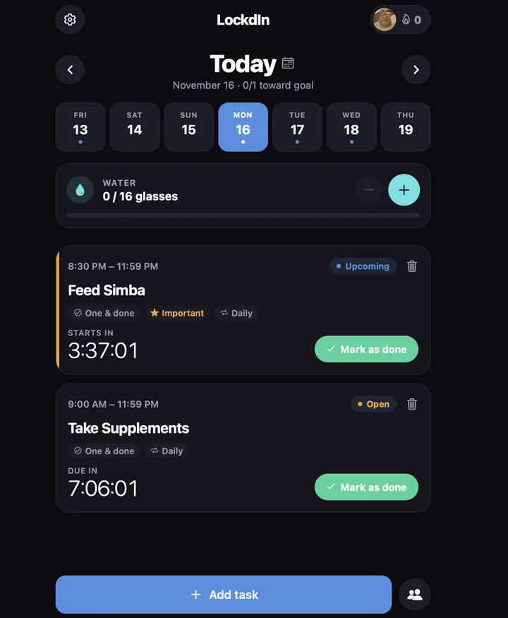

New-grad software engineer (UC Santa Cruz: B.A. Computer Science & B.S. Computer Science: Game Design, cum laude, 3.91 GPA).
I build cross-platform mobile apps and backend systems, and I'm now working on robot learning data at Tesla Optimus
while co-founding Bulletin.
Foster City, CA · Open to software engineering roles
01 Projects

LockdIn
Dec 2025 – Present
Cross-platform task app (iOS, Android, web) with streaks, XP, daily goals, and repeating tasks.
Offline-first Supabase sync layer with auth, row-level security, and 10 SQL migrations.
Friends, leaderboard, and push nudges with task data kept private; piloted with 15 users.
Notification planner within iOS's 64-notification limit; tested with SQL security checks, unit tests, and Playwright E2E, with GitHub Actions CI deploys.
iOS and web moon-phase app shipped via TestFlight, showing live phase, illumination, and moonrise/moonset from Apple WeatherKit through a Vercel backend, with an on-device fallback when the API is down.
Designed the UI, including a custom SVG moon that matches real illumination, and automated web deploys to GitHub Pages with GitHub Actions.
Collected 1,000+ high-quality data clips across diverse task categories, ensuring dataset quality for robot learning models.
Partnered with engineers to evaluate Optimus performance, writing detailed assessments and feedback.
Authored a 16+ step onboarding guide (setup, QA, troubleshooting), well received by the training coordinator, closing a gap left by verbal-only onboarding during rapid team scaling.
Oct 2026 – Present
Co-Founder & Lead Developer · Bulletin
Foster City, CA
Building a swipe-based hiring app matching blue-collar workers and contractors without AI screening.
Designed anti-ghosting mechanics: responsiveness stats, response timers, and a capped likes budget.
Shipped an iOS TestFlight build with Supabase auth and validated the concept with a SCORE mentor.
React Native
Expo
Supabase
Jan 2025 – Jun 2025
Software Engineering Intern · AnyLog
Santa Cruz, CA (UCSC capstone)
Co-developed a decentralized federated learning platform for privacy-preserving machine learning across distributed nodes.
Reduced node initialization time by ~20% with multithreaded initialization and training routines.
Migrated the backend from Flask to FastAPI, improving throughput and analysis tracking.
Helped containerize the platform with Docker for scalable, reproducible node deployments.
Presented architecture and live demos at the UCSC Baskin Engineering Undergraduate Project Showcase, highlighting healthcare and IoT applications.
Python
FastAPI
Flask
Docker
Education
Jun 2026
University of California, Santa Cruz
B.A. Computer Science & B.S. Computer Science: Game Design · Cum Laude · GPA 3.91